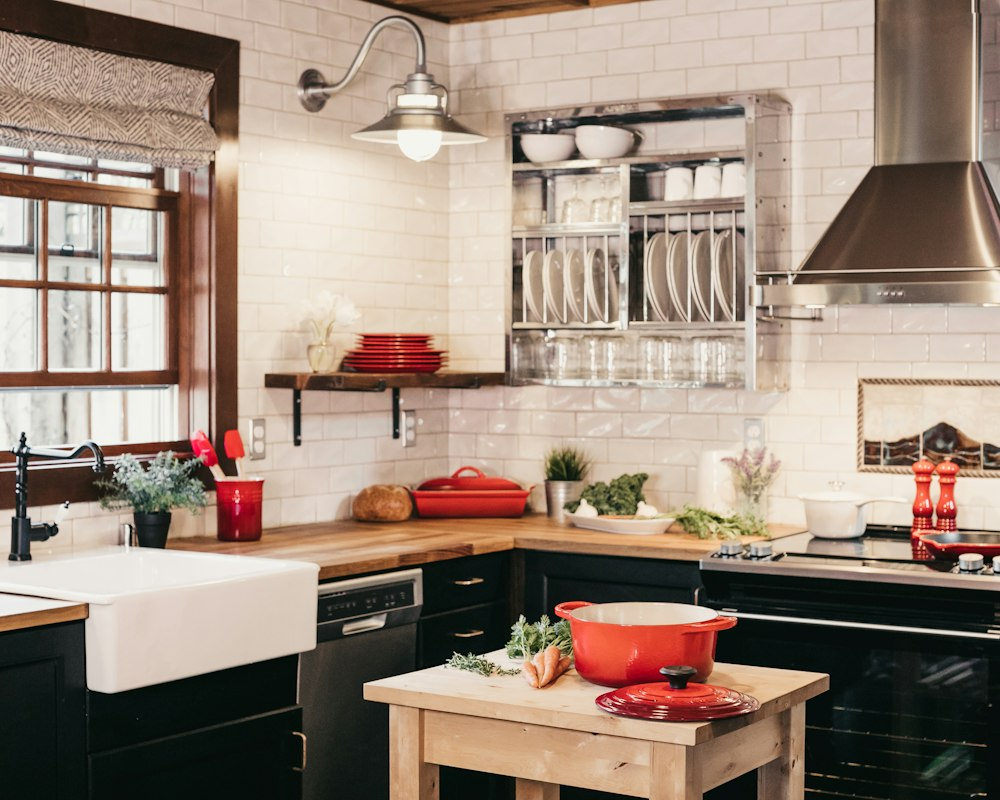
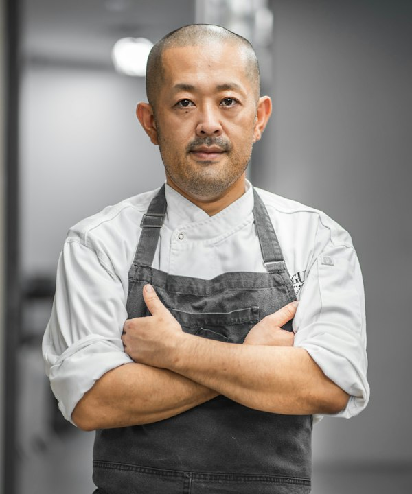
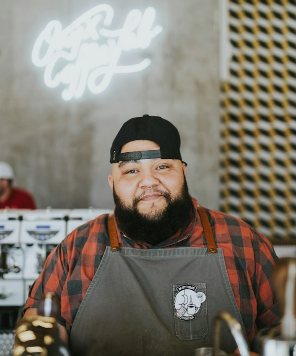
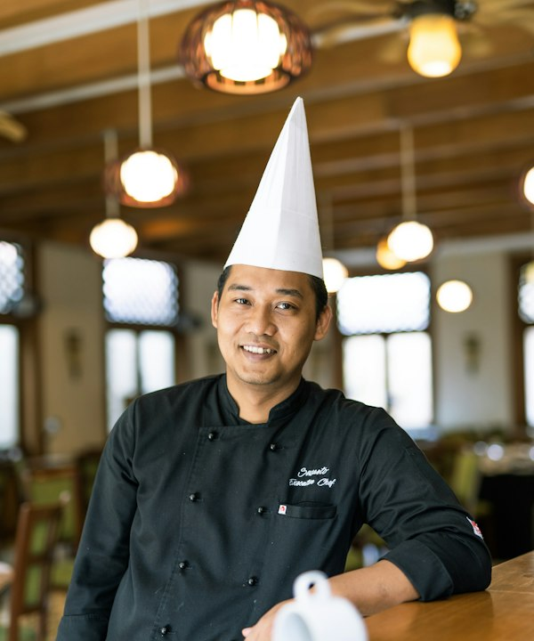
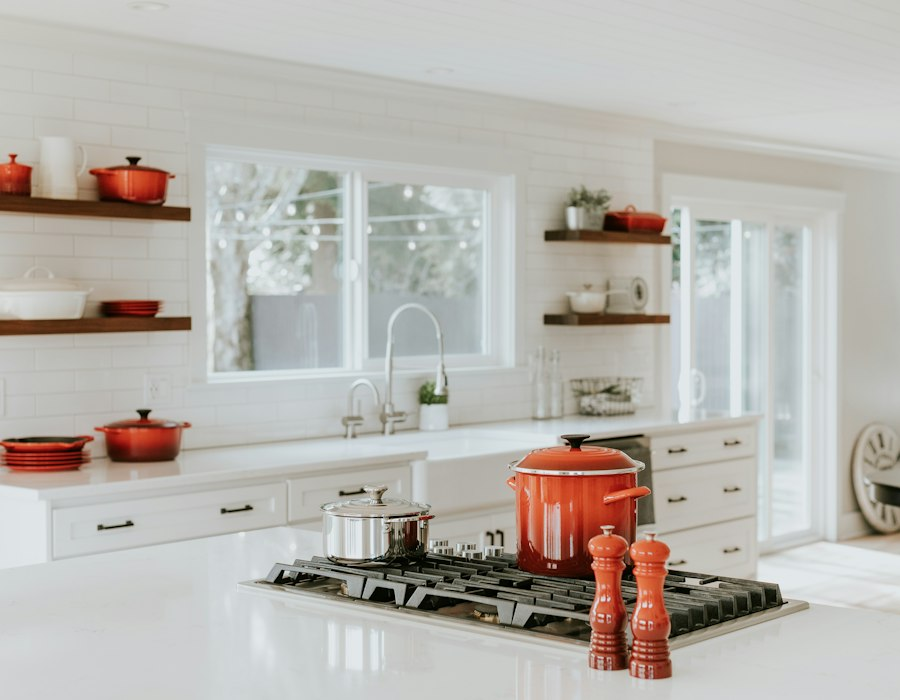
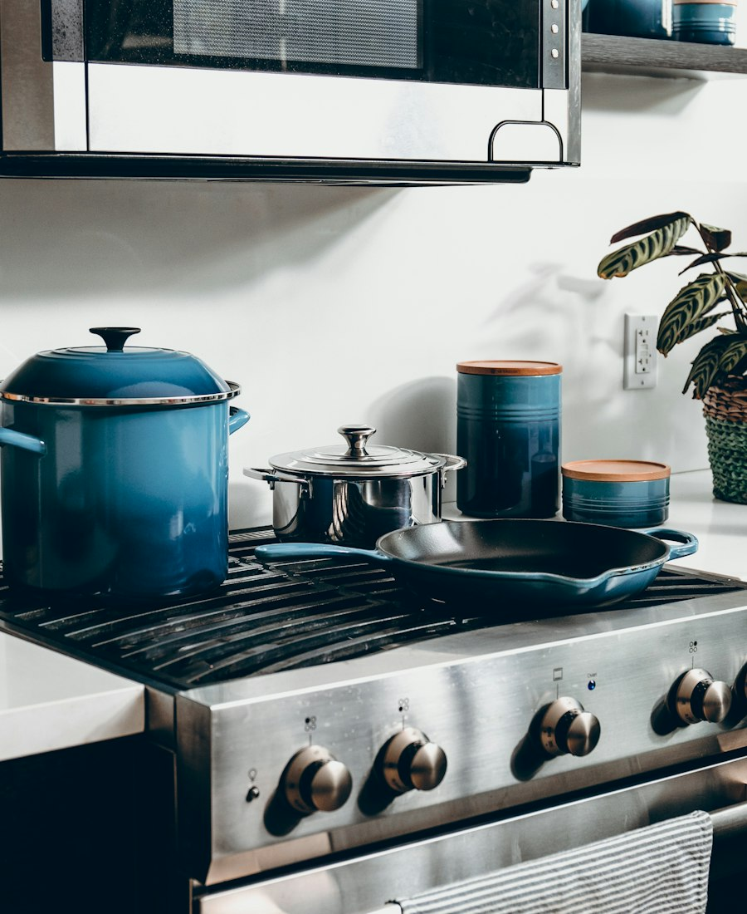
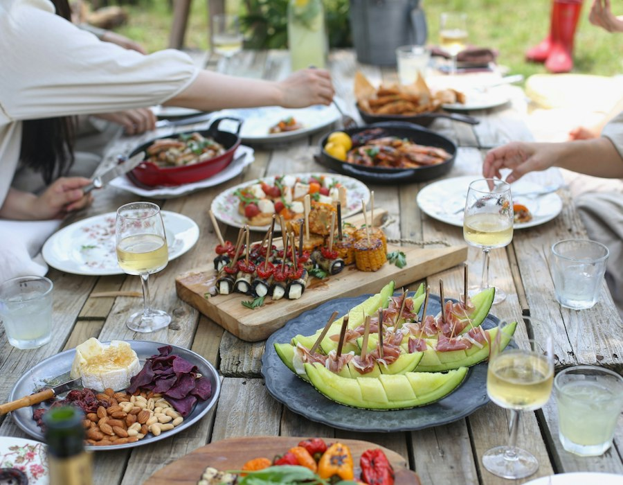

Every cook has a flame
You never stand at the back of a crowd watching. You get your own cooktop, prep board and chef's knife for the whole session.

Founded on Glisan Street in Portland's Pearl District in 2016, we teach by taste, touch and technique, so you leave with real instinct at the stove, not just a recipe.
We believe cooking is a craft that belongs to everyone, best learned by doing, tasting, making mistakes and asking questions.
You never stand at the back of a crowd watching. You get your own cooktop, prep board and chef's knife for the whole session.
Recipes are guidelines; technique is freedom. We teach the cues of smell, sizzle, colour and texture that build real intuition.
Every class ends at our 16-foot reclaimed cedar table, where we pour regional wine and eat the meal we just cooked together.
We buy directly from independent farms across the Willamette Valley and Hood River. Great seasonal ingredients need less fuss.
Our chefs have run restaurant kitchens, bakeries and food carts. Now they spend their evenings sharing the techniques that actually make a difference.
Founder & Head Chef · Italian, French pastry
Learned to roll sfoglia in her grandmother's kitchen in Bologna, then ran pastry for two busy Portland trattorias before opening Copper Pot in 2016.

15 years cookingJapanese cuisine · Knife skills
Trained in Osaka kaiseki kitchens and spent six years as head sushi chef in Seattle. He teaches whetstone sharpening, dashi and izakaya small plates.

12 years cookingMexican · Live fire · Bread
Started with a taco cart on SE Division and now leads our weekend workshops on masa, naturally leavened bread and live-fire cooking.

20 years cookingThai · Southeast Asian
Cooked in Bangkok hotel kitchens for a decade and still pounds every curry paste by hand, balancing sweet, sour, salty and spicy without a recipe.
Every inch of our 3,200 sq ft studio was designed so cooking feels natural, clean and completely unhurried.

No waiting in line or taking turns. Every student gets their own induction cooktop, end-grain cutting board and mise en place.

Cook with French copper pans, heavy enamelled Dutch ovens and carbon steel woks seasoned over years of use.

Our kitchen porters clear and wash every pot, pan and tool as you go, so you can focus on cooking, tasting and eating.
“The single best culinary experience in Portland. You leave not just full, but genuinely capable of making fresh ravioli on a weeknight.”
— Portland Monthly
“Copper Pot combines the discipline of professional culinary school with the warmth of an intimate dinner party.”
— Eater PDX
“Small benches, sharp knives, real fire and extraordinary chefs. A treasure for anyone who loves good food.”
— The Oregonian
Classes fill quickly with just 12 seats each. Check the schedule, or get in touch about private group bookings.